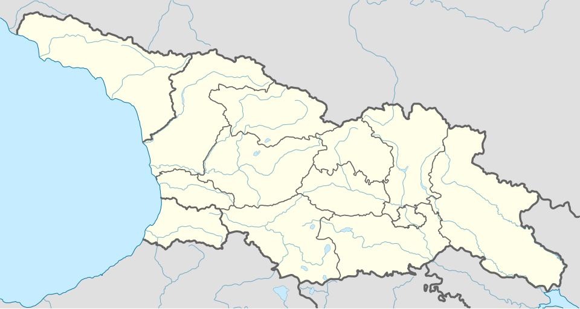

🇬🇪 جورجيا — دليل شامل للمستشار السياحي
دليل عملي ومحدث عن جورجيا: معلومات أساسية، برامج سياحية، معالم، مسافات، نصائح، وفيديوهات توضيحية.

ملخص مختصر
جورجيا تقع في جنوب القوقاز عند تقاطع أوروبا وآسيا، وتجمع بين تاريخ عريق وطبيعة متنوعة — من السهول الخضراء إلى الجبال المغطاة بالثلوج وسواحل البحر الأسود. تتميز بأسعار معقولة، طعام شهير، وأمان عالٍ، مما يجعلها وجهة مثالية للعائلات والمسافرين الباحثين عن تجربة ثقافية وطبيعية متكاملة.
معلومات أساسية سريعة
التأشيرة والدخول
- التأشيرة مجانية عند الوصول للمواطنين الخليجيين.
- يُنصح بحمل تذاكر العودة وتأكيد الفندق.
- قد يُطلب إثبات قدرة مالية (نقد أو بطاقة).
- للإقامات الطويلة أو العمل، يجب مراجعة السفارة الجورجية.
نقاط أساسية للمستشار
- الأمان: جورجيا من الدول الآمنة سياحياً، مناسبة للعائلات والنساء المسافرات وحدهن.
- التكلفة: أسعار معقولة مقارنة بأوروبا — وجبة بمطعم محلي من 15–30 لاري، فندق 3 نجوم من 100–200 لاري/ليلة.
- الطقس: معتدل في الربيع والخريف، حار في الصيف (تبليسي)، بارد مع ثلوج في الشتاء (المناطق الجبلية).
- المواصلات: مترو تبليسي رخيص ونظيف، تتوفر حافلات بين المدن (مارشروتكا) وتكاسي تطبيقات (Bolt/Yandex).
- الطعام: المطبخ الجورجي غني ومميز — تجربة الخينكالي والخاشابوري والمتشادي ضرورية.
- الإنترنت: تتوفر شرائح SIM رخيصة (Magti، Geocell) مع باقات إنترنت ممتازة.
- الدين: أغلبية مسيحية أرثوذكس، مع احترام للديانات الأخرى ومساجد متوفرة في تبليسي وباتومي.
المدن والمعالم الرئيسية
🏛️ تبليسي (العاصمة)
🏖️ باتومي (البحر الأسود)
🏔️ المناطق الجبلية والطبيعية
🏛️ كوتايسي ومناطق غرب جورجيا
🍷 مناطق جبلية وتاريخية إضافية
أفكار برامج عملية
📋 جدول مقارنة البرامج
| النمط | المدة | النطاق | المناسب لـ |
|---|---|---|---|
| قصير | 3 أيام | تبليسي فقط | عطلة نهاية أسبوع |
| متوسط | 7 أيام | تبليسي • بورجومي • باتومي | عائلات / أزواج |
| طويل | 10 أيام | تبليسي • باتومي • بورجومي • سوانتي • أنانوري | تجربة شاملة |
💡 نظرة سريعة
- تبليسي — مثالية للبرامج الثقافية والتذوق والمشي.
- باتومي — مناسبة للراحة والواجهة البحرية في الصيف.
- بورجومي وباكورياني — يناسبان السفر العائلي والطبيعي.
- سوانتي — للمسافرين الباحثين عن جولات جبلية وتاريخية.
- كازبيغي وغوداري — لمن يريد تجربة جبلية أعمق وكنيسة الثالوث.
- كوتايسي — لاستكشاف الكهوف والطبيعة الغربية.
- أنانوري — قلعة تاريخية ومناظر طبيعية خلابة.
تفاصيل البرامج اليومية
برنامج قصير — تبليسي (3 أيام)
| اليوم | الفعاليات |
|---|---|
| 1 | الوصول إلى تبليسي، استكشاف البلدة القديمة، الحمامات الكبريتية، جسر السلام. |
| 2 | جولة شارع روستافيلي، كاتدرائية ساميبا، صعود قلعة ناريكالا بالتلفريك، متحف التاريخ الوطني. |
| 3 | رحلة نصف يوم إلى متسخيتا (العاصمة القديمة)، التسوق في سوق دزفيري، ثم التوجه للمطار. |
برنامج متوسط — تبليسي + بورجومي + باتومي (7 أيام)
| اليوم | الفعاليات |
|---|---|
| 1 | الوصول إلى تبليسي والاستراحة. |
| 2 | جولة في تبليسي: البلدة القديمة، قلعة ناريكالا، وتجربة الطعام الجورجي. |
| 3 | الانتقال إلى بورجومي، زيارة حديقة بورجومي الوطنية وتجربة الينابيع الحارة. |
| 4 | باكورياني — أنشطة جبلية وتلفريك (مناسب للعائلات). |
| 5 | رحلة إلى كازبيغي — زيارة كنيسة الثالوث في الجبل، ثم الاستمرار إلى باتومي. |
| 6 | استكشاف باتومي: الكورنيش، حديقة النباتات، برج الأبجدية، والشاطئ. |
| 7 | العودة إلى تبليسي، تسوق نهائي، ثم المغادرة. |
برنامج طويل — جولة شاملة (10 أيام)
| اليوم | الفعاليات |
|---|---|
| 1 | الوصول إلى تبليسي والاستراحة. |
| 2 | جولة تبليسي الكاملة: البلدة القديمة، قلعة ناريكالا، الحمامات الكبريتية، كاتدرائية ساميبا. |
| 3 | رحلة إلى كازبيغي وغوداري — جولة جبال القوقاز، كنيسة الثالوث، ومناطق التزلج. |
| 4 | الانتقال إلى بورجومي، تجربة المنتجعات الصحية والينابيع الحارة. |
| 5 | باكورياني — أنشطة جبلية وتلفريك، ثم الاستمرار إلى كوتايسي. |
| 6 | كوتايسي — زيارة كهف برميثيوس، الشلالات المتحجرة، الأنهار الجوفية، وبحيرات الكهف. |
| 7 | الانتقال إلى باتومي، استكشاف الكورنيش وميدان أوروبا. |
| 8 | جولة باتومي: حديقة النباتات، برج الأبجدية، الشاطئ، ثم رحلة إلى سوانتي. |
| 9 | زيارة أبراج سوانتي التاريخية وجولة طبيعية في الجبال. |
| 10 | العودة إلى تبليسي، زيارة متسخيتا وقلعة أنانوري، ثم المغادرة. |
المسافات بين المدن
| من | إلى | المدة بالسيارة | المسافة |
|---|---|---|---|
| تبليسي | متسخيتا | 30 دقيقة | 25 كم |
| تبليسي | بورجومي | 2.5 ساعة | 180 كم |
| بورجومي | باكورياني | 40 دقيقة | 30 كم |
| تبليسي | باتومي | 5.5 ساعات | 360 كم |
| بورجومي | باتومي | 4.5 ساعات | 270 كم |
| تبليسي | أنانوري | 2 ساعة | 110 كم |
| تبليسي | سوانتي (ميستيا) | 5 ساعات | 280 كم |
| تبليسي | كازبيغي | 1.5 ساعة | 75 كم |
| كازبيغي | غوداري | 30 دقيقة | 20 كم |
| باكورياني | كوتايسي | 2 ساعة | 120 كم |
| كوتايسي | باتومي | 3.5 ساعات | 230 كم |
الطقس والمواسم
🌸 الربيع
مارس — مايو
معتدل ومريح، ازدهار الطبيعة. مثالي لتبليسي والمناطق الطبيعية.
☀️ الصيف
يونيو — أغسطس
حار في تبليسي، مثالي لباتومي والبحر الأسود. ذروة الموسم.
🍂 الخريف
سبتمبر — نوفمبر
أفضل وقت للزيارة — طقس معتدل وألوان الخريف الساحرة.
❄️ الشتاء
ديسمبر — فبراير
بارد وثلجي — مثالي للتزلج في باكورياني وغودوري.
نصائح عملية
💰 المال والصرف
- العملة الرسمية: اللاري الجورجي (GEL).
- صرف تقريبي: 1 دولار ≈ 2.7 لاري (تحقق من السعر الحالي).
- تتوفر صرافات في كل مكان بأسعار جيدة.
- البطاقات (Visa/Mastercard) مقبولة في معظم الأماكن.
- احتفظ ببعض النقد للأسواق والمواصلات الصغيرة.
🍽️ الطعام والشراب
- الخينكالي: فطائر اللحم أو الجبن المسلوقة.
- الخاشابوري: خبز بالجبن والزبدة.
- المتشادي: خبز الذرة التقليدي.
- الشاي الجورجي: مشروب تقليدي شهير في المنطقة.
- تتوفر مطارات حلال ومطاعم عربية في تبليسي وباتومي.
🚗 المواصلات
- مترو تبليسي: رخيص (1 لاري)، نظيف، يغطي معظم المدينة.
- تطبيقات التكاسي: Bolt و Yandex — أسعار معقولة.
- بين المدن: حافلات مارشروتكا أو قطار أو سائق خاص.
- استئجار سيارة: متوفر لكن القيادة في الجبال قد تكون صعبة.
- تلفريك تبليسي: وسيلة ممتعة لرؤية المدينة من الأعلى.
📱 اتصال وإنترنت
- شرائح SIM: Magti أو Geocell — تغطية ممتازة.
- الأسعار: باقات إنترنت جيدة من 10–30 لاري.
- تتوفر شبكات Wi-Fi مجانية في معظم الفنادق والمقاهي.
- تطبيق Bolt يستخدم للتكاسي والتوصيل.
- تطبيق Google Maps يعمل بكفاءة في جورجيا.
أرقام مهمة
فيديوهات توضيحية
خريطة الوجهة

⚠️ ملاحظة: هذه الصفحة مرجع تعليمي عام — تحقق من المعلومات الرسمية (التأشيرة، أسعار الصرف، القيود، وأرقام الطوارئ) قبل أي عرض للعميل. الأسعار والمعلومات قابلة للتغير.